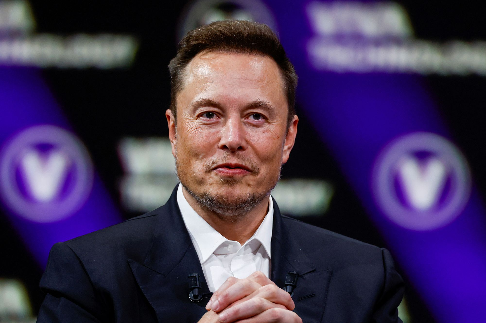

Lionel Andrés "Leo" Messi[note 1] (Spanish pronunciation: [ljo'nel an'dɾes 'mesi] ; born 24 June 1987) is an Argentine professional footballer who plays as a forward for and captains both Major League Soccer club Inter Miami and the Argentina national team. Widely regarded as one of the greatest players of all time, Messi has won a record eight Ballon d'Or awards, a record six European Golden Shoes, and was named the world's best player for a record eight times by FIFA.[note 2] Until 2021, he had spent his entire professional career with Barcelona, where he won a club-record 34 trophies, including ten La Liga titles, seven Copa del Rey titles, and the UEFA Champions League four times.[note 3] With his country, he won the 2021 Copa América and the 2022 FIFA World Cup. A prolific goalscorer and creative playmaker, Messi holds the records for most goals (474), hat-tricks (36), and assists in La Liga (192). He has the most international goals by a South American male (106). Messi has scored over 800 senior career goals for club and country, and the most goals for a single club (672).
Messi relocated to Spain and joined Barcelona aged 13, making his competitive debut at age 17 in October 2004. He established himself as an integral player for the club within the next three years, and in his first uninterrupted season in 2008-09 helped Barcelona achieve the first treble in Spanish football; that year, aged 22, Messi won his first Ballon d'Or. Messi won four consecutive Ballons d'Or, the first player to win it four times. During the 2011-12 season, he set La Liga and European records for most goals in a season, while establishing himself as Barcelona's all-time top scorer. The following two seasons, he finished second for the Ballon d'Or behind Cristiano Ronaldo, his perceived career rival, before regaining his best form during the 2014-15 campaign, becoming the all-time top scorer in La Liga and leading Barcelona to a historic second treble, and was awarded a fifth Ballon d'Or in 2015. Messi assumed captaincy of Barcelona in 2018, and won a record sixth Ballon d'Or in 2019. He signed for French club Paris Saint-Germain in August 2021, spending two seasons there and winning Ligue 1 twice. Messi joined American club Inter Miami in July 2023, winning the Leagues Cup in August.
An Argentine international, Messi is the country's all-time leading goalscorer and holds the national record for appearances. At youth level, he won the 2005 FIFA World Youth Championship and gold at the 2008 Summer Olympics. His style of play as a diminutive, left-footed dribbler drew comparisons with compatriot Diego Maradona, who described Messi as his successor.[13] After his senior debut in 2005, Messi became the youngest Argentine to play and score in a FIFA World Cup (2006). As the squad's captain from 2011, he led Argentina to three consecutive finals: the 2014 FIFA World Cup, the 2015 Copa América and the 2016 Copa América. After announcing his international retirement in 2016, he reversed this and led his country to qualification for the 2018 FIFA World Cup and victory in the 2021 Copa América. He led Argentina to win the 2022 FIFA World Cup, where he won a record second Golden Ball, scored seven goals including two in the final, and broke the record for most games played at the World Cup (26), later receiving his record-extending eighth Ballon d'Or in 2023.
Messi has endorsed sportswear company Adidas since 2006. According to France Football, he was the world's highest-paid footballer for five years out of six between 2009 and 2014, and was ranked the world's highest-paid athlete by Forbes in 2019 and 2022. Messi was among Time's 100 most influential people in the world in 2011, 2012, and 2023. In 2020 and 2023, he was named the Laureus World Sportsman of the Year, the first team-sport athlete to win it. In 2020, Messi was named to the Ballon d'Or Dream Team and became the second footballer and second team-sport athlete to surpass $1 billion in career earnings.
Among his contemporary peers, Messi is most often compared and contrasted with Portuguese forward Cristiano Ronaldo, as part of an ongoing rivalry that has been compared to past sports rivalries like the Muhammad Ali-Joe Frazier rivalry in boxing, the Roger Federer-Rafael Nadal rivalry in tennis, and the Prost-Senna rivalry from Formula One motor racing.
Although Messi has at times denied any rivalry, they are widely believed to push one another in their aim to be the best player in the world. Since 2008, Messi has won eight Ballons d'Or to Ronaldo's five, seven FIFA World's Best Player awards to Ronaldo's five, and six European Golden Shoes to Ronaldo's four. Pundits and fans regularly argue the individual merits of both players.[152][155] Beyond their playing styles, the debate also revolves around their differing physiques - Ronaldo is 1.87 m (6 ft 1+1⁄2 in) with a muscular build - and contrasting public personalities with Ronaldo's self-confidence and theatrics a foil to Messi's humility.[156][157][158] From 2009-10 to 2017-18, Messi faced Ronaldo at least twice every season in El Clásico, which ranks among the world's most viewed annual sports events. Off the pitch, Ronaldo is his direct competitor in terms of salary, sponsorships, and social media fanbase.
After Messi led Argentina to victory in the 2022 FIFA World Cup, a number of football critics, commentators, and players have opined that Messi has settled the debate between the two players.
DENZEL WASHINGTON (GOAT)
Denzel Hayes Washington Jr. (born December 28, 1954) is an American actor, producer, and director. Known for his versatile work spanning over four decades of screen and stage, Washington has been regarded as one of the best actors of his generation, with The New York Times naming him the greatest actor of the 21st century in 2020.[1] Washington has received a number of honors, including two Academy Awards, a Tony Award, two Golden Globe Awards, as well as the Cecil B. DeMille Award and AFI Life Achievement Award, and nominations for two Primetime Emmy Awards.
After training at the American Conservatory Theater, Washington began his career in theatre, acting in performances off-Broadway. He first came to prominence in the NBC medical drama series St. Elsewhere (1982-1988), and in the war film A Soldier's Story (1984). Nominated for 10 Academy Awards, Washington won Best Supporting Actor for playing an American Civil War soldier in Glory (1989) and Best Actor for playing a corrupt cop in Training Day (2001). A prominent leading man, he has also starred in a number of other films, including Mo' Better Blues (1990), Mississippi Masala (1991), Philadelphia (1993), Courage Under Fire (1996), Remember the Titans (2000), Man on Fire (2004), Inside Man (2006), and American Gangster (2007). He starred in The Equalizer trilogy (2014-2023) and directed and starred in the films Antwone Fisher (2002), The Great Debaters (2007), and Fences (2016).
Washington made his Broadway debut in Checkmates (1988). He won the Tony Award for Best Actor in a Play for starring in the Broadway revival of August Wilson's play Fences in 2010. Washington later directed, produced, and starred in the film adaptation in 2016. He has since returned to Broadway in the revivals of Lorraine Hansberry play A Raisin in the Sun (2014) and the Eugene O'Neill play The Iceman Cometh (2018).
Washington has served as the national spokesman for Boys & Girls Clubs of America since 1993 and has appeared in public service announcements and awareness campaigns for the organization.[78] He has also served as a board member for Boys & Girls Clubs of America since 1995. Due to his philanthropic work with the Boys & Girls Club, PS 17X, a New York City Elementary School, decided to officially name their school after Washington.
In mid-2004, Washington visited Brooke Army Medical Center (BAMC) at Fort Sam Houston, where he participated in a Purple Heart ceremony, presenting medals to three Army soldiers recovering from wounds they received while stationed in Iraq. Washington also visited the fort's Fisher House facilities, and after learning that it had exceeded its capacity, made a substantial donation to the Fisher House Foundation; this program focuses on building and providing homes for military personnel and their families free of charge while they receive medical care. Washington's other charitable contributions include US$1 million to Nelson Mandela's Children's Fund in 1995 and US$1 million to Wiley College to resuscitate the college's debate team.
The Revolutionary Armed Forces of Colombia (FARC) named Washington as one of three people (the others being directors Oliver Stone and Michael Moore) with whom they were willing to negotiate for the release of three defense contractors the group had held captive from 2003 to 2008.That effort by FARC was unsuccessful.
On May 18, 1991, Washington was awarded an honorary doctorate from his alma mater, Fordham University, for having "impressively succeeded in exploring the edge of his multifaceted talent."In 2011, he donated US$2 million to Fordham for an endowed chair of the theater department, as well as US$250,000 to establish a theater-specific scholarship at the school. Washington also received an honorary Doctorate of Humanities from Morehouse College on May 20, 2007[85] and an honorary Doctor of Arts degree from the University of Pennsylvania on May 16, 2011.
On October 11, 2021, the United States Army made Washington the 2021 Honorary Sergeant Major of the Army at the Annual Association of the U.S. Army conference for his work with the Fisher House Foundation (providing free homes for military families while receiving medical care). Sergeant Major of the Army Michael A. Grinston presented Washington with the award and said that Washington represented everything he was looking for in this year's honoree: humility, dedication to soldiers, and respect for the Army.In 2022, Washington received the Presidential Medal of Freedom.
AYODEJI BALOGUN (BIG WIZ)
Ayodeji Ibrahim Balogun (born 16 July 1990), who is known professionally as Wizkid, is a Nigerian singer and songwriter. Born in the Ojuelegba suburb of Surulere, Lagos, Wizkid is a prominent voice in the emerging Afrobeats movement. His music is blend of Afrobeats, afropop, R&B, afrobeat, reggae, dancehall, and pop.[12] He began recording music at the age of 11 and released a collaborative album with the Glorious Five, a group he and a couple of his church friends formed. In 2009, Wizkid signed a record deal with Banky W's Empire Mates Entertainment (E.M.E). He rose to the limelight after releasing "Holla at Your Boy", the lead single from his debut studio album, Superstar (2011), which also spawned the singles "Tease Me/Bad Guys" and "Don't Dull".
In September 2014, he released the self-titled second studio album, Ayo, which was supported by six singles, including "Jaiye Jaiye". Wizkid left E.M.E. after his contract expired. In 2016, Wizkid achieved international recognition following his collaboration with Drake on the hit single "One Dance", which reached number-one on the US Billboard Hot 100 and topped the charts in 14 additional countries. The song broke multiple records, making Wizkid the first afrobeats artist to appear in the Guinness World Records. In March 2017, he signed a multi-album deal with RCA Records and released his third studio album, Sounds from the Other Side, later that year. The album was supported by five singles, including "Come Closer" (featuring Drake).
In 2018, he was featured on the song "Checklist" by Normani and Calvin Harris, which reached number-one on the Billboard World Digital Song Sales chart. The following year, he was featured on Beyoncé's project The Lion King: The Gift on the single "Brown Skin Girl", which also reached number-one on the World Digital Song Sales chart, and won him a Grammy Award for Best Music Video. In October 2020, he released his fourth album, Made in Lagos, which received commercial success and acclaim, reaching number-one on the Billboard World Album Chart. The album includes the single "Essence" featuring Tems, which became the first Nigerian song to chart on the Billboard Hot 100, and reached the top ten following a remix released by Justin Bieber. Wizkid's fifth album, More Love, Less Ego, was released on 11 November 2022.
Wizkid's work is credited for popularizing Afrobeats worldwide in the late 2010s and early 2020s. Morgan Enos of The Recording Academy praised his 2020 album Made in Lagos as a “potent mix of Afrobeats and R&B", stating that it ”further accelerated the already-unstoppable surge of Nigerian music throughout the world”. NotJustOk opined "The 'afrobeats to the world' movement is one that has progressed from being a trek, to a trot and now presently, a swift race, with baton tightly clenched by several star players whose sounds have sliced through the airwaves to reach international heights and by so doing, level the once seemingly unsurmountable playing field. One of such acts is Wizkid".[141] Critics noted that Wizkid has introduced Afrobeats to a wider audience, paving the way for other African artists to reach international success.
In 2021 Billboard stated that Wizkid "is the first African artist to truly make a major pop breakthrough in the United States and seems best poised to do so globally, too”. Eromo Egbejule of The Guardian Nigeria mentioned Wizkid as an inspiration for a generation of African artists, including Tiwa Savage, Davido, Mr Eazi, Maleek Berry, Tekno and Burna Boy.
Poppie Platt of The Daily Telegraph said "The Afrobeats pioneer's fusion of traditional rhythms, slick R&B production and a smattering of pop-ready lyrics, sung in a mix of Yoruba and English, have helped to commercialise the genre across the West, making it one of the industry's most profitable - and brilliant - imports. ". Nicole Vassell of The Independent deemed Wizkid "king of Afrobeats", by asserting that he's "undeniably one of the reasons for the genre's mainstream appeal". Joe Coscarelli of The New York Times credited his collaborations with international artists such as Chris Brown and Major Lazer for cementing him as a “lasting international pop cultural ambassador”. Former Governor of Minnesota Mark Dayton declared October 6 as "Wizkid day" in the state, stating "Wizkid has inspired Minnesotans, and music fans around the world as one of the biggest cultural influencers of our time."
ELON MUSK (MONEY)

Elon Reeve Musk (/'i:lɒn/ EE-lon; born June 28, 1971) is a businessman and investor. He is the founder, chairman, CEO, and CTO of SpaceX; angel investor, CEO, product architect, and former chairman of Tesla, Inc.; owner, executive chairman, and CTO of X Corp.; founder of the Boring Company and xAI; co-founder of Neuralink and OpenAI; and president of the Musk Foundation. He is one of the wealthiest people in the world; as of April 2024, Forbes estimates his net worth to be US$196 billion.
A member of the wealthy South African Musk family, Musk was born in Pretoria and briefly attended the University of Pretoria before immigrating to Canada at age 18, acquiring citizenship through his Canadian-born mother. Two years later, he matriculated at Queen's University at Kingston in Canada. Musk later transferred to the University of Pennsylvania and received bachelor's degrees in economics and physics. He moved to California in 1995 to attend Stanford University, but dropped out after two days and, with his brother Kimbal, co-founded online city guide software company Zip2. The startup was acquired by Compaq for $307 million in 1999. That same year, Musk co-founded X.com, a direct bank. X.com merged with Confinity in 2000 to form PayPal. In October 2002, eBay acquired PayPal for $1.5 billion. Using $100 million of the money he made from the sale of PayPal, Musk founded SpaceX, a spaceflight services company, in 2002.
In 2004, Musk became an early investor in electric vehicle manufacturer Tesla Motors, Inc. (later Tesla, Inc.). He became the company's chairman and product architect, assuming the position of CEO in 2008. In 2006, Musk helped create SolarCity, a solar-energy company that was acquired by Tesla in 2016 and became Tesla Energy. In 2013, he proposed a hyperloop high-speed vactrain transportation system. In 2015, he co-founded OpenAI, a nonprofit artificial intelligence research company. The following year, Musk co-founded Neuralink—a neurotechnology company developing brain-computer interfaces—and the Boring Company, a tunnel construction company. In 2018, the U.S. Securities and Exchange Commission (SEC) sued Musk, alleging that he had falsely announced that he had secured funding for a private takeover of Tesla. To settle the case, Musk stepped down as the chairman of Tesla and paid a $20 million fine. In 2022, he acquired Twitter for $44 billion. He subsequently merged the company into newly created X Corp. and rebranded the service as X the following year. In March 2023, Musk founded xAI, an artificial intelligence company.
Musk has expressed views that have made him a polarizing figure. He has been criticized for making unscientific and misleading statements, including COVID-19 misinformation and antisemitic conspiracy theories. His ownership of Twitter has been similarly controversial, being marked by layoffs of large numbers of employees, an increase in hate speech, misinformation and disinformation on the website, and changes to Twitter Blue verification.
Musk is president of the Musk Foundation he founded in 2001, whose stated purpose is to: provide solar-power energy systems in disaster areas; support research, development, and advocacy (for interests including human space exploration, pediatrics, renewable energy and "safe artificial intelligence"); and support science and engineering educational efforts.
As of 2020, the foundation has made 350 donations. Around half of them were made to scientific research or education nonprofits. Notable beneficiaries include the Wikimedia Foundation, his alma mater the University of Pennsylvania, and his brother Kimbal's nonprofit Big Green. From 2002 to 2018, the foundation gave $25 million directly to nonprofit organizations, nearly half of which went to Musk's OpenAI, which was a nonprofit at the time.The Foundation also allocated $100 million of donations to be used to establish a new higher education university in Texas.
In 2012, Musk took the Giving Pledge, thereby committing to give the majority of his wealth to charitable causes either during his lifetime or in his will. He has endowed prizes at the X Prize Foundation, including $100 million to reward improved carbon capture technology.
Vox said "the Musk Foundation is almost entertaining in its simplicity and yet is strikingly opaque", noting that its website was only 33 words in plain-text. The foundation has been criticized for the relatively small amount of wealth donated. In 2020, Forbes gave Musk a philanthropy score of 1, because he had given away less than 1% of his net worth. In November 2021, Musk donated $5.7 billion of Tesla's shares to charity, according to regulatory filings. However, Bloomberg News noted that all of it went to his own foundation, bringing Musk Foundation's assets up to $9.4 billion at the end of 2021. The foundation disbursed $160 million to nonprofits that year. Reporting by The New York Times found that in 2022, the Musk Foundation gave away $230 million less than the minimum required by law to maintain tax-deductible status, and that in 2021 and 2022 over half the foundation's funds went to causes connected to Musk, his family, or his businesses.
OSITA IHEME & IKEDIEZE CHINEDU (GREATEST)
OSITA IHEME (PAW PAW)
Osita Iheme MFR (// ⓘ; born 20 February 1982)[1] is a Nigerian actor, author, film producer and comedian known for his role as Pawpaw in Aki na Ukwa (2002) alongside Chinedu Ikedieze. Since then, he has starred in several Nollywood productions including 2 Rats (2003), Baby Police (2003), Nollywood Babylon (2008), The Mirror Boy (2011), Christmas in Miami and Aki and Pawpaw (2021). Iheme was the recipient of the 2007 Africa Movie Academy Award for Lifetime Achievement and was conferred Order of the Federal Republic (MFR), a federal honour by President Goodluck Jonathan in 2011.
Iheme was born on 20 February 1982 in Abia State, located in the southeastern region of Nigeria, although a native of Mbaitoli, Imo State, southeast Nigeria, to a family of five with parents, Herbert and Augustina Iheme. He had his MBA from the Institute of Management and Technology, Enugu (IMT). After his education, he began acting in 1998 where he acted initially in a featured role.
Iheme was often typecast in the role of a child in various films. He rose to prominence after starring as Pawpaw with Chinedu Ikedieze in Aki na Ukwa (2002). He became the ambassador of TAJBank in 2023.
To reward his contribution towards comedy genre movies Nigerian Film Industry, in 2011 he was awarded the Nigerian National Honor of Member of the Order of the Federal Republic (MFR) by President Goodluck Jonathan.In 2007, he was given the lifetime Achievement award by AMAA (African movie Academy Awards).
Osita Iheme's performance alongside fellow actor and his longtime friend Chinedu Ikedieze in the 2002 film Aki na Ukwa is still widely spoken about and the duo, especially Osita's character, on-screen trending through memes since 2019 on Twitter and other social media platforms. This eventually earned him a global fanbase.
CHINEDU IKEDIEZE (AKI)
Chinedu Ikedieze, MFR (born 12 December 1977) is a Nigerian actor, entrepreneur and investor. He is best known for playing alongside Osita Iheme in the 2002 film Aki na Ukwa. He has featured in over 150 films in a career spanning over 22 years. He has acted in the role of a kid in most of his films during his early career due to his stature and physical appearance. He is known as Aki for his performance in the film Aki na Ukwa. In 2011, he married fashion designer Nneoma Nwaijah and the couple had their first child in 2012.
Chinedu completed his primary and secondary education in Aba, Abia State. After completing his secondary education he earned a Higher National Diploma (HND) in Theatre Arts and a degree in Mass Communication from the Institute of Management and Technology, Enugu (IMT). After completing his studies at IMT, he initially wanted to become a lawyer but pursued a career in film acting in 1998 and initially featured in lesser roles. He first acted in a minor role in the 1998 film Evil Men. He enrolled in the prestigious New York Film Academy in 2004.
He entered the Nollywood industry in 2000 and rose to recognition in a Nigerian film he acted in 2000, Aki na Ukwa, where he played the breakthrough role of Aki alongside another little person actor Osita Iheme. This created a bond between both of them. The duo were popularly identified as "Aki and Paw Paw" since the release of the film in 2002 and ever since they have both featured together in several films taking the lead roles in those movies. Both Chinedu and Osita have been maintaining onscreen and offscreen chemistry which is widely praised by the Nollywood fraternity
In 2007, Ikedieze received the Lifetime Achievement Award at the Africa Movie Academy Awards. He was also honored with the Order of the Federal Republic which was given by the then Nigerian President Goodluck Jonathan for his contributions to Nollywood and to the economic growth of the country.
In 2018, he was honored in Miami, Florida in the United States of America as a distinguished visitor to the city of Miami, Florida.[16] In appreciation he said “From the bottom of my heart I say thank you to Miami-Dade, country office of the Mayor and the county commissioners for honoring me as a distinguished visitor to the city of Miami, Florida. You have just given me a key to more success in life. He therefore encouraged all to believe if themselves if the world believes in them.
His performance alongside fellow little person actor Osita Iheme in the 2002 film Aki na Ukwa is still widely spoken of and the duo especially Osita's character has been trending through memes since 2019 in Twitter and other social media platforms globally. Osita is listed as one of the richest actors in Nigeria.